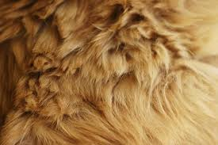
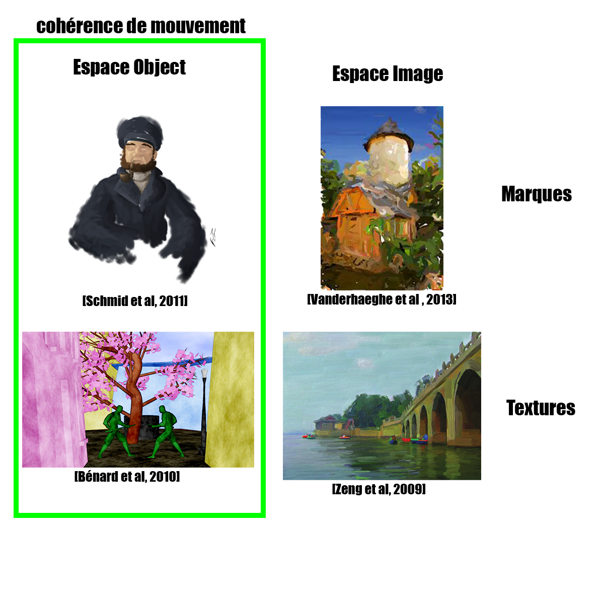
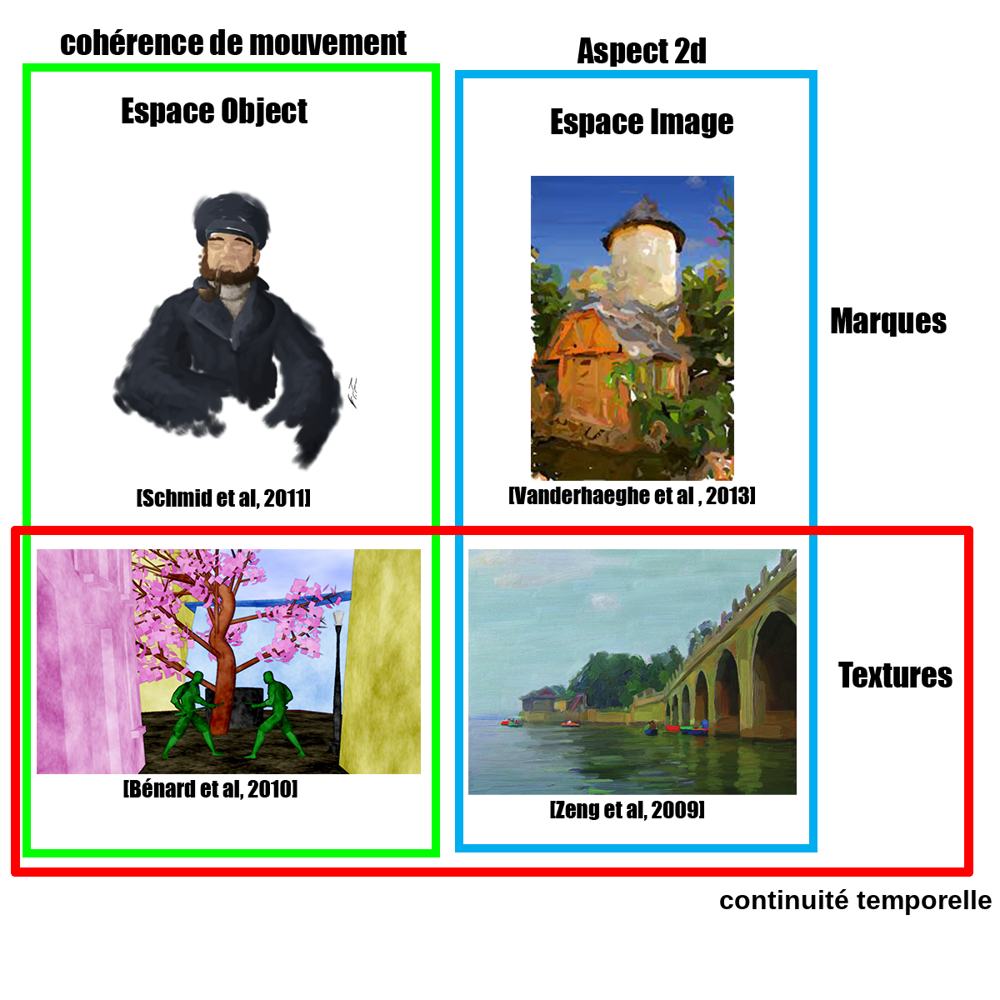
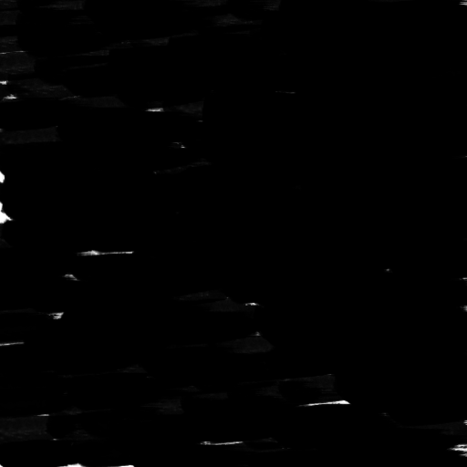

Stylisation implicite de scènes 3D à l'étape du compositing
Maxime Isnel
supervisé par Joëlle Thollot et Romain Vergne

Synthèse d'image
photoréaliste

non photoréaliste
Rendu non photoréaliste


Notre stylisation
Notre but:
- Donner des outils pour styliser
- Variété de styles
- Animer les scènes
La continuité temporelle
Loving Vincent, 2017La cohérence du mouvement
L'aspect 2D
La cohérence temporelle
[Bénard, 2011]:
- Continuité temporelle
- Cohérence du mouvement
- Aspect 2D
Espaces de travail
Espace objet

Espace image
G-Buffer
Normales

Positions

Profondeur

Primitives de dessin
A base de textures

A base de marques


Point d'ancrage
Espace objet
 OverCoat: an implicit canvas for 3D painting
OverCoat: an implicit canvas for 3D painting
Espace image
Etat de l'art
Etat de l'art
Etat de l'art
Etat de l'art
Notre approche
- Marques
- Guidées par une texture
- Espace image avec G-buffer
Étape du compositing
- Espace image
- informations sur la géometrie déjà rendu
- peut être intégrer dans des pipelines sans structure particulière
Normales
Positions
Profondeur
Vue d'ensemble

Splatting

Splatting
Le principe
Générateur procédural
Générateur procédural de points
Principe de calcul
Utilisé par Worley [Worley, 1996]

- grille
- points aléatoires
- distance avec le plus proche
Notre texture
Notre texture
Constance de la taille des point quand la fréquence du bruit change
Notre texture
Constance de la taille des point quand la distance à la caméra change
Fractalisation
Sans fractalisation
Avec fractalisation
Fractalisation
Principe
Splatting
Splatting
Mélange des marques
A changer
Fonction "over" utilisé par [Schmid, 2011]
Vue d'ensemble
Paramêtres utilisateur
- densité des marques
- taille des zones d'ancrage
- contenu des marques
- taille des marques
- orientation
- transparence global
Résultats
- poil
- orientés avec les normales
- taille petite avec variation
Résultats
- coup de pinceaux
- orientés avec les tangentes
- taille grande
Résultats
- feuilles
- orientés avec les normales
- taille petite
Limitations
- Aliasing
- continuité temporelle
Travaux futurs
- Objets déformables et scènes dynamiques
- Aspect des points d'ancrage
- Aspect des marques
Conclusion
Fourrure en peinture digitale
Peinture au pinceaux
Dessin à partir de feuilles